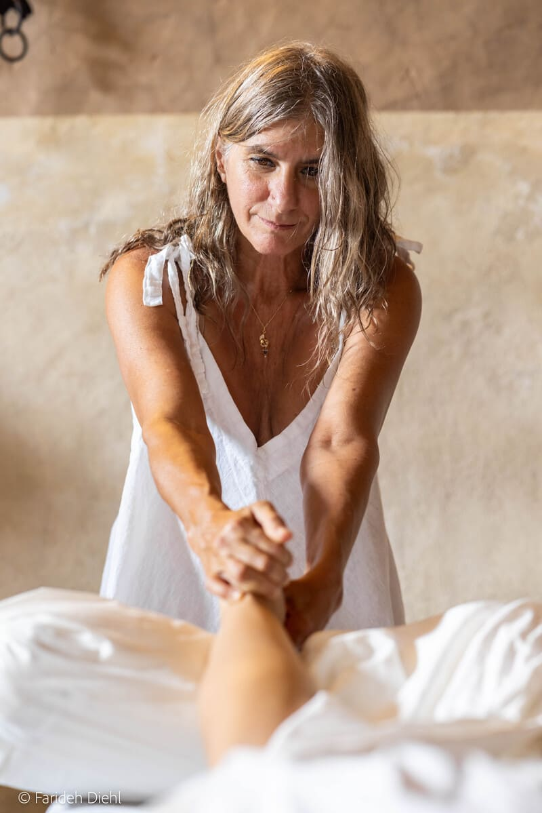
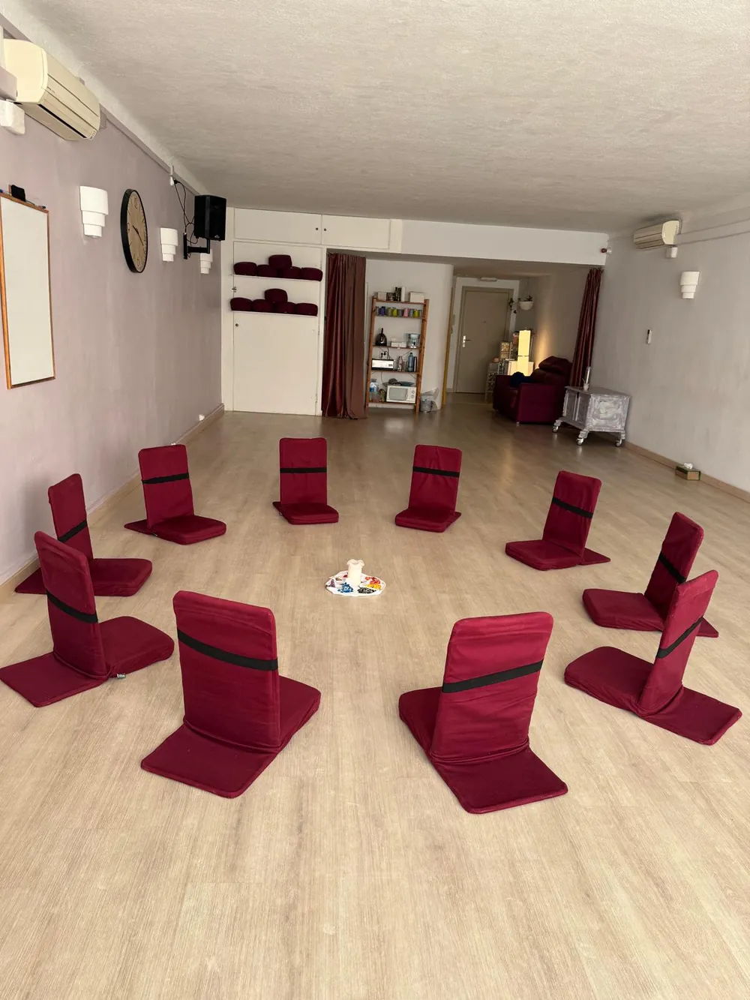
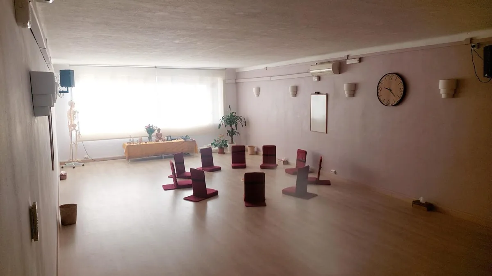
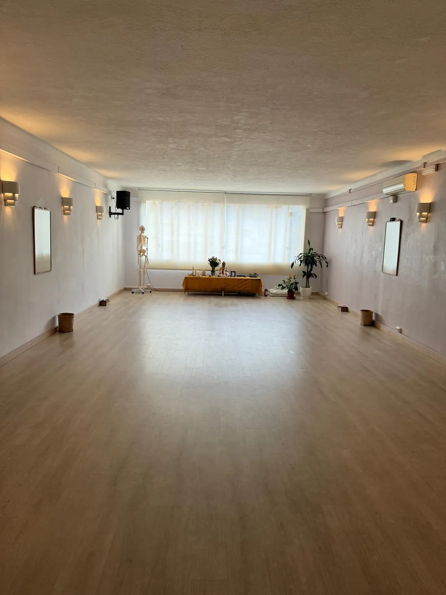
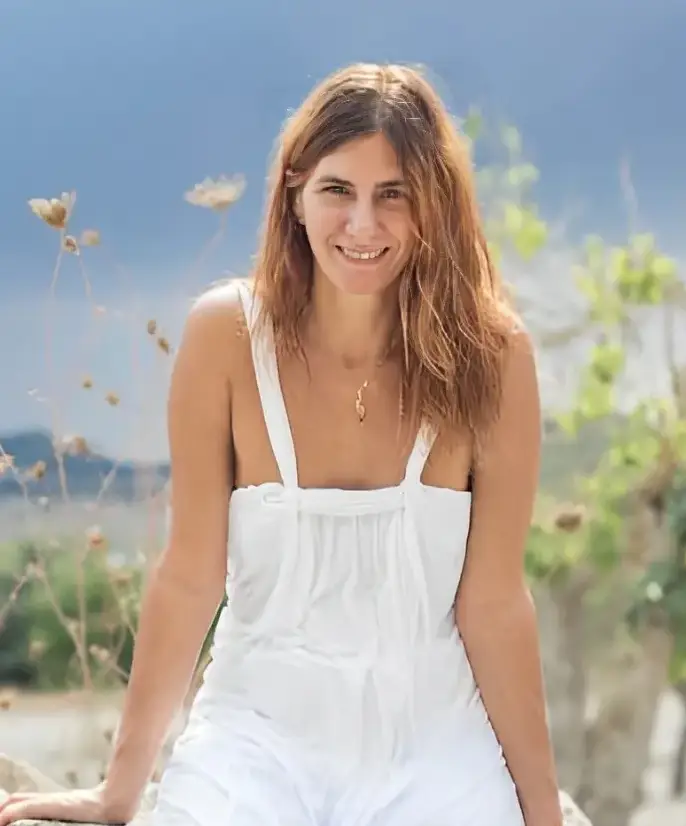
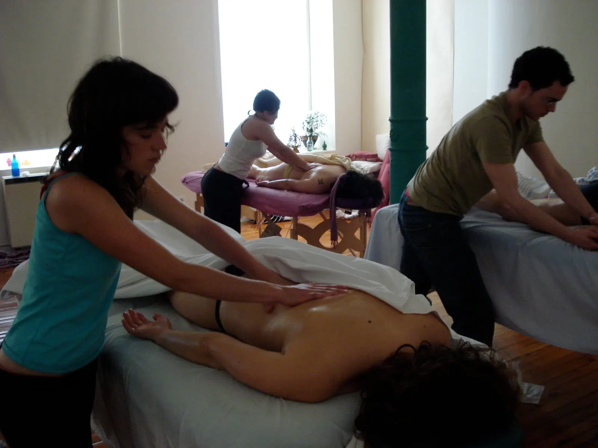
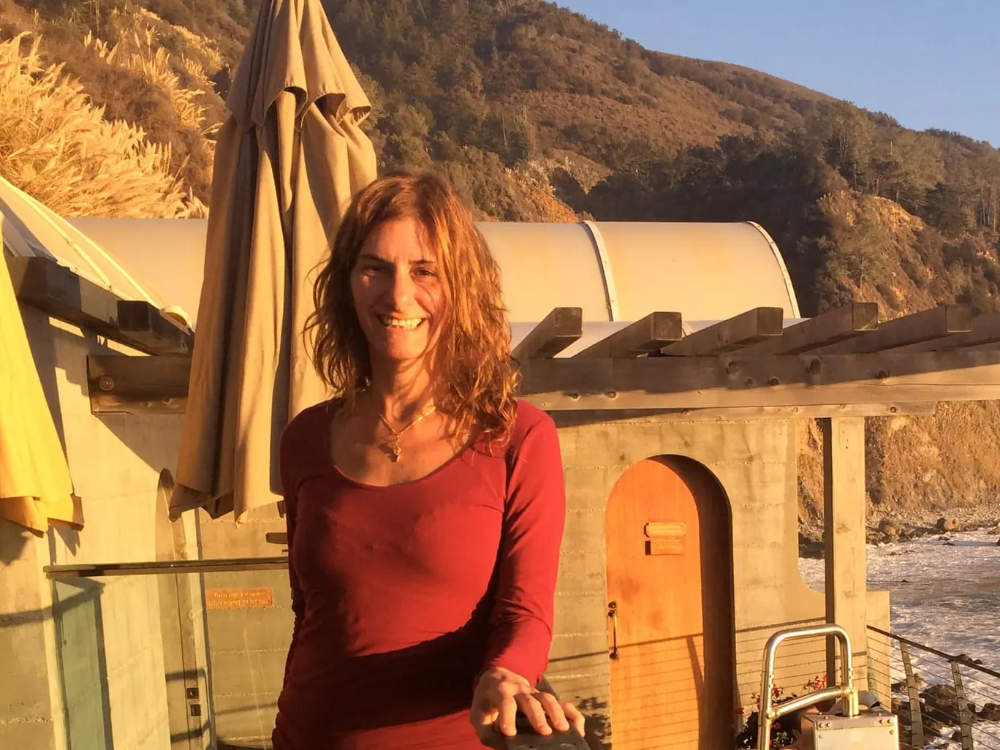
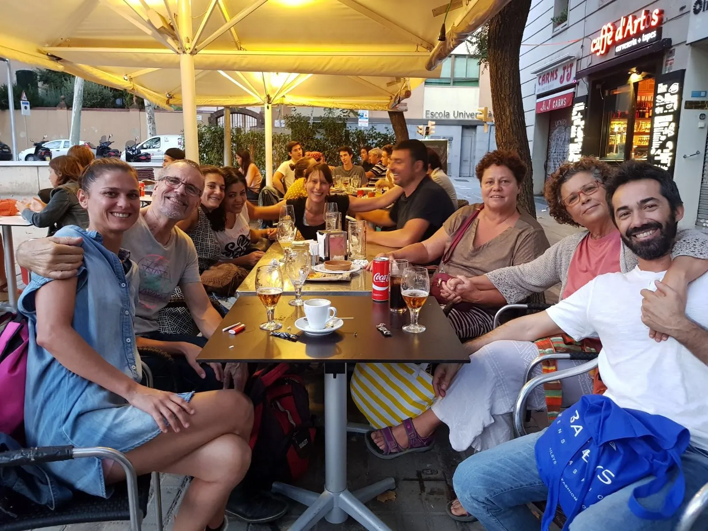
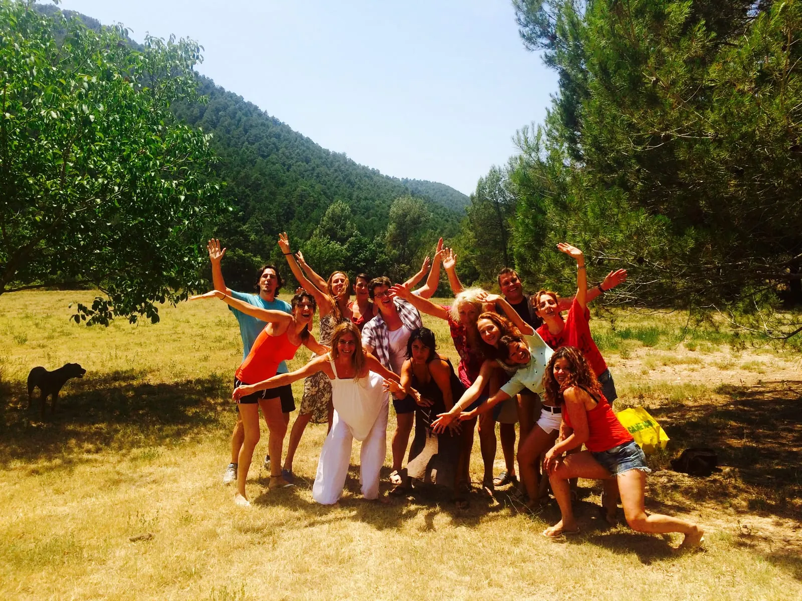

Ediciones presenciales en España
Inmersión en la Esencia de Spazio Bodywork®
Un fin de semana
para vivir la experiencia
de nuestra esencia.
Dos días de práctica viva para incorporar los fundamentos del Masaje Californiano y del trabajo corporal psicosomático. En el instituto fundado por Sujati Lacanna, que introdujo el Masaje Californiano en España con la primera escuela del país (2006).
250 € el fin de semana completo
reservas tu plaza con 80 €
Dos días para tocar desde el centro.
Sábado y domingo · 10:00 — 19:30
Barcelona
21 y 22 de noviembre de 2026
Sede Central · C/ Viladomat 152, 2ª
Madrid
17 y 18 de abril de 2027
Espacio Calithai · C/ Gonzalo de Córdoba 17 (Plaza de Olavide)



El Espacio está en silencio y tus manos descansan sobre la espalda de otra persona. No estás empujando con los brazos: entregas el peso de tu cuerpo desde tu centro. Tu respiración acompaña y recorres el cuerpo como una ola del mar envolvente, de pies a cabeza, sin nada de esfuerzo; y al terminar te das cuenta de que no te has cansado.
Así se aprende aquí: en presencia, con aceite, practicando por parejas en un espacio cuidado. Das y recibes en cada propuesta, porque el toque consciente solo se comprende desde dentro.
En el Espacio no se memorizan posturas rígidas. Se aprende a apoyar el peso, a respirar mientras se toca y a esperar. Cuando el cuerpo se apoya, la mano deja de empujar.
Dos preguntas
Dos preguntas para empezar
¿Te apasiona el bienestar y el contacto, pero no sabes por dónde empezar ni cómo usar tu cuerpo para no cansarte?
¿Has aprendido con vídeos sueltos o técnicas mecánicas y te quedan dudas de postura, peso o fluidez?
Los dos días
Sábado y domingo, de 10:00 a 19:30
Vas a aprender a usar el peso de todo tu cuerpo para no cargar la espalda, a tocar sin desgaste y a acompañar sin invadir. Sábado y domingo de 10:00 a 19:30, con pausa al mediodía. Presencial, en grupo y trabajando por parejas sobre camilla: en cada secuencia das y recibes.
-
Enraizamiento y consciencia sensorial
Empezamos preparando nuestro propio cuerpo: prácticas de movimiento y presencia para despertar la conciencia sensorial y aprender a estar enraizados para trabajar desde nuestro centro antes de ir al contacto.
Ver convocatorias -
La ola envolvente (práctica con aceite)
Cómo situarnos, cómo entregarnos el peso del cuerpo sin forzar y cómo crear la ola envolvente con los movimientos largos, fluidos e integradores que caracterizan al Masaje Californiano.
Ver convocatorias -
Escucha psicosomática
Integramos recursos para autorregularnos, neurocepción (la sensación de seguridad en quien da y quien recibe) y presencia para acompañar desde el respeto profundo.
Ver convocatorias
Convocatorias con inscripción abierta
Precio y condiciones
Sábado y domingo · 10:00 a 19:30
Para quien nunca ha tocado y para quien ya se dedica al masaje. Es una experiencia completa en sí misma y, a la vez, el primer paso del camino formativo de Spazio Bodywork® en nuestras distintas sedes.
-
Próxima convocatoria
Barcelona
250€ / fin de semana
- Los dos días de formación
- Práctica por parejas
- Reserva online de 80 €
- Sábado y domingo 10:00–19:30
-
Barcelona
250€ / fin de semana
- Los dos días de formación
- Práctica por parejas
- Reserva online de 80 €
- Sábado y domingo 10:00–19:30
-
Madrid
250€ / fin de semana
- Los dos días de formación
- Práctica por parejas
- Reserva online de 80 €
- Sábado y domingo 10:00–19:30
- Reserva de plaza (o el total)
- 80 €
- El resto, el día del curso
- 170 €
Qué incluye
Los dos días de formación.
Qué no incluye
Alojamiento, comidas ni desplazamiento.
Cómo se paga
La reserva de 80 € se paga online, en esta misma página, con pago seguro. Los 170 € restantes se abonan en efectivo el día del curso, al inicio de la formación.
Qué te llevas
- Elementos básicos de las técnicas del Masaje Californiano
- Trabajo Corporal Psicosomático básico
- Conexión con el cliente / Presencia
- Práctica de la Conciencia Sensorial
«Tocar con manos relajadas y presentes. Aprender a mover la energía en todo mi cuerpo y el de la persona que recibe. Encontrar mi centro desde donde dar, sin esfuerzo. Atravesar las barreras de tocar y ser tocados desde este lugar de presencia y conexión. Tomar consciencia de la importancia de un espacio seguro.»

Instructora
Quién lo imparte
El Instituto Spazio Bodywork® lleva La Inmersión en la esencia a distintas ciudades de España, manteniendo en todas las sedes el mismo programa, ritmo y cuidado del grupo.
Sujati (Sandra C. Lacanna)
Creadora y directora de Spazio Bodywork®. Ediciones de Barcelona y sedes invitadas.
Fundó la primera escuela de Masaje Californiano en España (2006). Más de 23 años de experiencia profesional: comenzó su formación como terapeuta en India en 1994, vivió dos años en la Comuna Internacional de Osho, se formó en Masaje Californiano en 2000 en la Oasis Massage School (donde fue asistente e instructora seis años) y está certificada internacionalmente como terapeuta de Masaje Esalen® por el Instituto Esalen de Big Sur (California), con formación en Experiencia Somática®.


María Lucas
Instructora titular en la sede de Madrid.
Terapeuta en Masaje Californiano y Masaje Esalen, directora de Espacio Calithai Masajes. Comienza su formación en Masaje Californiano viviendo en Argentina en el año 2006 donde descubre la Escuela de Masajes y Artes Curativas Oasis. En el 2008 se instala de nuevo en Madrid donde conoce a Sujati, con quien colaborará como asistenta para el Instituto Spazio Bodywork®. El camino prosigue nutriéndolo en base a la vivencia personal y a la formación.
Realiza la Certificación en Masaje Esalen, Tejido Profundo (con Yamuna y Roger – Oasis) y talleres de especialización con Ingrid May (Oasis).
En el 2015 inaugura su propio espacio de trabajo en Madrid: Espacio Calithai Masajes, donde se dedica a dar sesiones de Masaje Californiano Esalen y a participar más estrechamente con el Instituto Spazio Bodywork®, abriendo el espacio de prácticas para los alumnos.
Se encuentra en el tercer año de formación de Somatic Experience®.
«Contemplo el cuerpo como una llave de exploración interna que nos conduce al silencio y a la alegría intrínseca de la vida.»
Reseñas en Google
Reseñas en Google
5,0 ★★★★★
- 323 reseñas Barcelona
- 20 reseñas Madrid
«Mucho más allá de la técnica, esta escuela plantea un acompañamiento profundo, basado en la presencia y la escucha.»
-
★★★★★
Una hermosa experiencia con el grupo de Spazio Bodywork. En los 9 días del intensivo básico pude incorporar nuevas herramientas para poder mejorar mi calidad de vida y la de mi entorno. El masaje californiano es una de las tantas ramas de trabajo y terapias interpersonales originadas en California en los 60 que hasta el día de hoy están vigentes y ganan cada vez más espacio en la salud considerando a cada individuo como tal y escuchando activamente sus necesidades individuales. El contacto consciente y de calidad es una de sus bases y en esta formación fue lo que más pude mejorar.
Recomiendo enormemente para todos los que quieran una experiencia profunda y enriquecedora. -
★★★★★
Ha sido todo un privilegio descubrir el Arte del Masaje Californiano bajo la amorosa y profesional guía de dos auténticas Maestras como son Sujati y María. Un viaje experiencial altamente recomendable por su holística función, pues no se limita únicamente a la enseñanza de una técnica de masaje, sino que además, te eleva en tu sendero espiritual...liberando, sanando y regulando nuestro preciado Sistema Nervioso. Agradecer infinitamente a todo el equipo de Spazio Bodywork y de Dimas su afectuoso recibimiento, así como la dulce atención y extremo cuidado con los que en todo momento cubrían los corazones y estómagos de los que llegamos siendo auténticos desconocidos, para salir formando parte de esta bella comunidad del Masaje Californiano engendrada por Sujati, una alma cuya dedicación y vocación son derramadas en sus talleres. Namaste🙌
-
★★★★★
Nunca había contactado con el masaje Californiano y esta experiencia en Mallorca ha sido para mi de profunda transformación, un viaje hacia mi parte mas afectiva, compasiva y humana. Ha merecido la pena!!! El entorno, la sala, el contacto, la presencia, la atención cuidadosa, el respeto hacia mi propio cuerpo y el de los demás.....Maravilloso!!! Gracias infinitas a Sujati y a todo el equipo por vuestra calidad humana y profesional. Hasta pronto!!!
-
★★★★★
Descubrí el masaje californiano de una manera casual, podría decir que llegó a mi vida en el momento adecuado. Seguí mi intuición y me lance a realizar el curso de iniciación. Puedo afirmar que ha sido un antes y un después en mi vida. Jamás pensé que algo tan simple pudiera tener tanto que enseñarme y que descubrirme sobre mi verdadero ser.
Invito a todos a seguir su intuición y probar, si el algún momento, este masaje llega a tu vida. -
★★★★★
¡Maravillosa e inolvidable experiencia! Renovadora y nutritiva 🌱 A todos los niveles profesional y personal
Estupendo equipo de profesionales.
Un espacio y un lugar cálido y acogedor
Donde se siente el acompañamiento, la escucha y el cuidado del grupo, no solo a través del masaje, sino también de las dinámicas que se comparten que permiten conectar con nuestro interior bajar al cuerpo y disfrutar del momento presente
Un camino auténtico y profundo de auto conocimiento a través del contacto dando sino recibiendo
Gracias por todo lo vivido y compartido
a cada uno de los miembros de la escuela que lo hacen posible❤️
Memoria · 2007 — 2015
Nuestra trayectoria




Convocatorias y reserva
Convocatorias abiertas
Sábado y domingo, de 10:00 a 19:30
| Fecha | Ciudad y espacio | Imparte | Reservar |
|---|---|---|---|
| Barcelona Sede Central · C/ Viladomat 152, 2ª | Imparte Sujati | ||
| Barcelona Sede Central · C/ Viladomat 152, 2ª | Imparte Sujati | ||
| Madrid Espacio Calithai · C/ Gonzalo de Córdoba 17 (Plaza de Olavide) | Imparte María Lucas |
La fecha más próxima viene preseleccionada en el formulario. ¿Nos escribes desde otra ciudad (Málaga, Mallorca…)? Abre el desplegable de dudas del formulario o déjanos tu contacto y te avisaremos en cuanto abramos fecha en tu zona.
Formulario de reserva
Convocatoria más próxima · Barcelona, 21 y 22 de noviembre de 2026
Aquí va el formulario de reserva · widget de 4 pasos del sitio
La Inmersión en la esencia es una formación vivencial. No es una terapia ni sustituye a un tratamiento.
Dudas
Preguntas frecuentes
¿Necesito experiencia previa?
No. Está pensado tanto para quien nunca ha aplicado el toque consciente como para quien ya practica masaje: empezamos por la base corporal y la escucha.
Soy masajista, ¿me va a aportar algo?
Sí: revisar desde dónde tocas y trabajar sin desgaste. Incorporas el peso de todo el cuerpo, la fluidez de la ola envolvente con manos, antebrazos y codos, y recursos de presencia y autorregulación.
¿Es un curso suelto o el inicio de la formación?
Funciona por sí mismo como inmersión de dos días y, a la vez, es la puerta de entrada al camino formativo de Spazio Bodywork®.
¿Cómo se paga la reserva?
La reserva de 80 € se paga online, en esta misma página, con pago seguro al elegir sede y fecha. El resto, 170 €, se abona en efectivo el día del curso.
¿Qué tengo que llevar?
Ropa cómoda que no limite tu movimiento.
¿Puedo venir solo a recibir?
No: esto es una formación y se aprende tocando a otras personas. Si lo que buscas es recibir un masaje, escríbenos y te orientamos.
Dudas y consultas
¿Te queda alguna duda?
Escríbenos aquí y te contestamos en menos de 24 h.